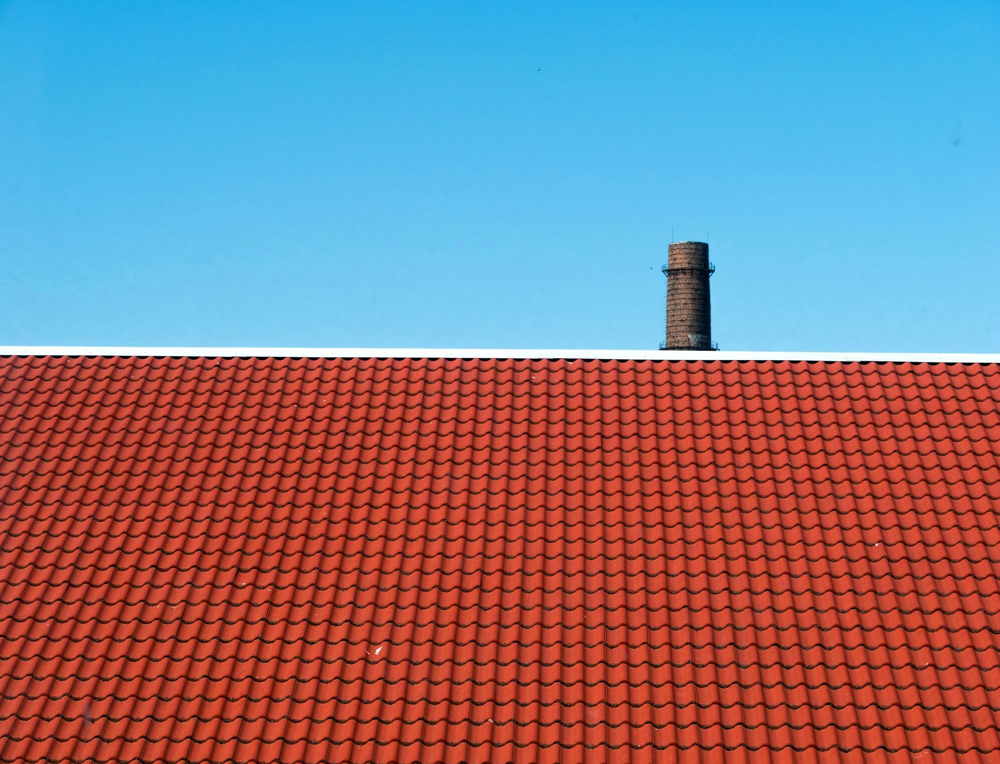
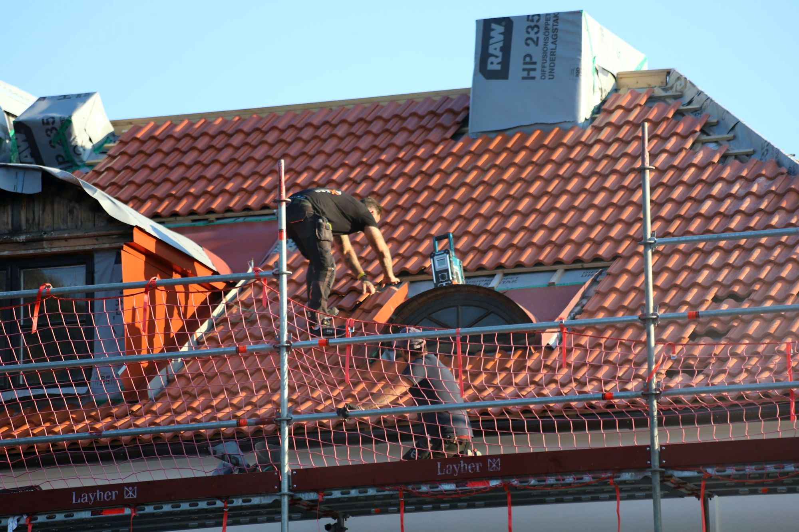
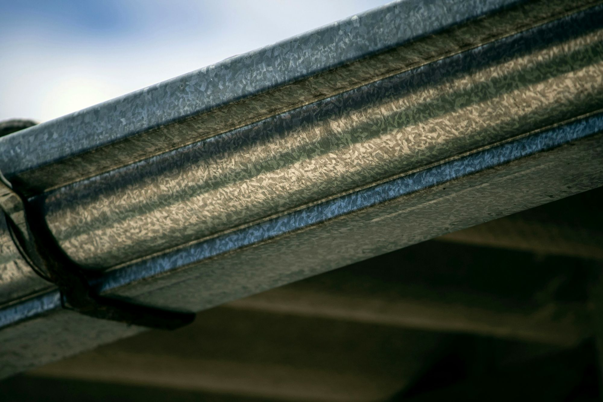
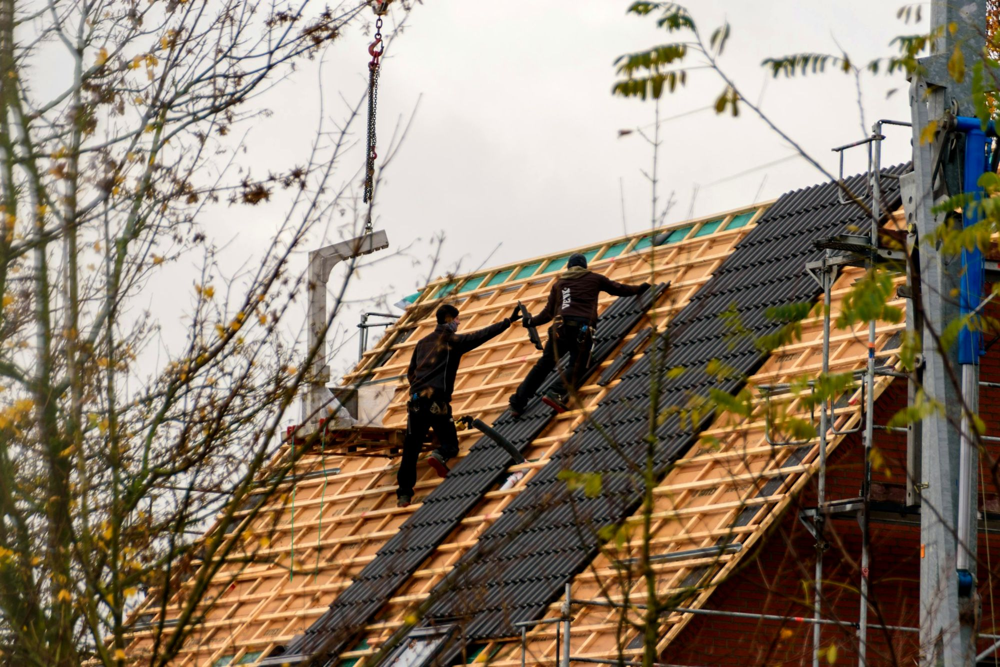
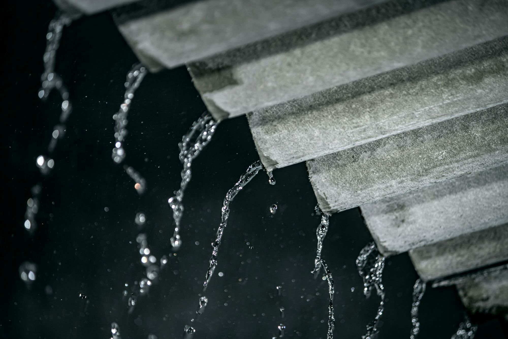
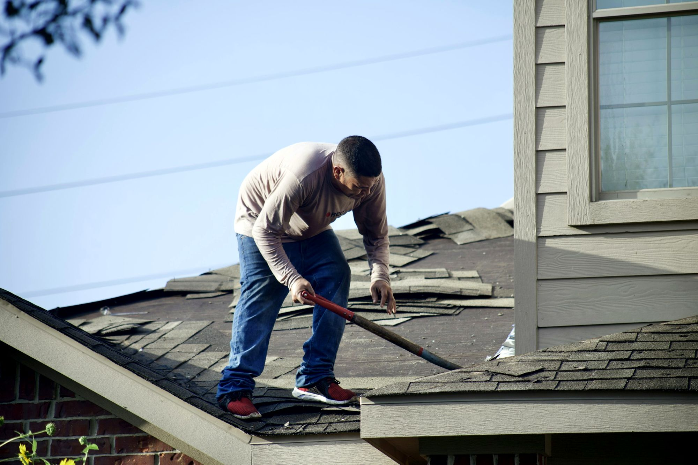
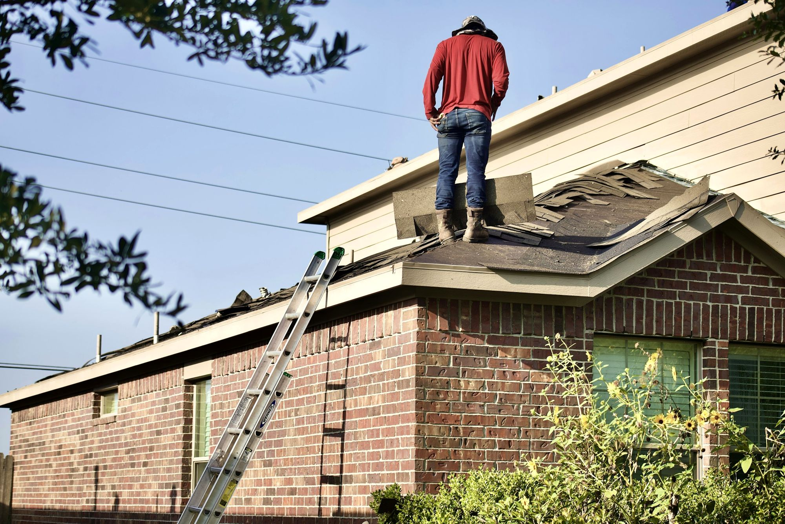
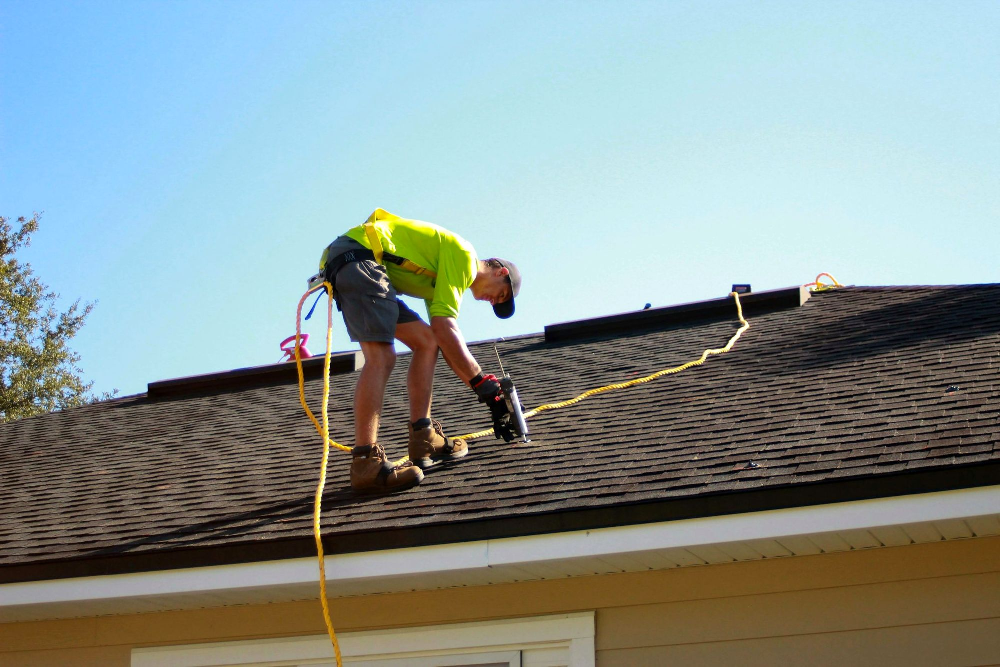
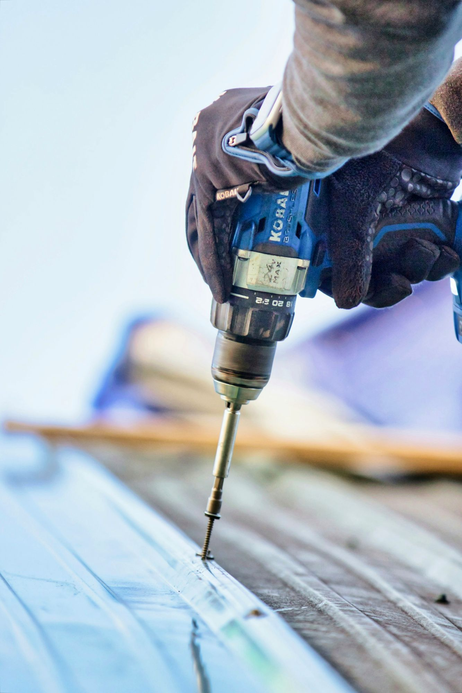
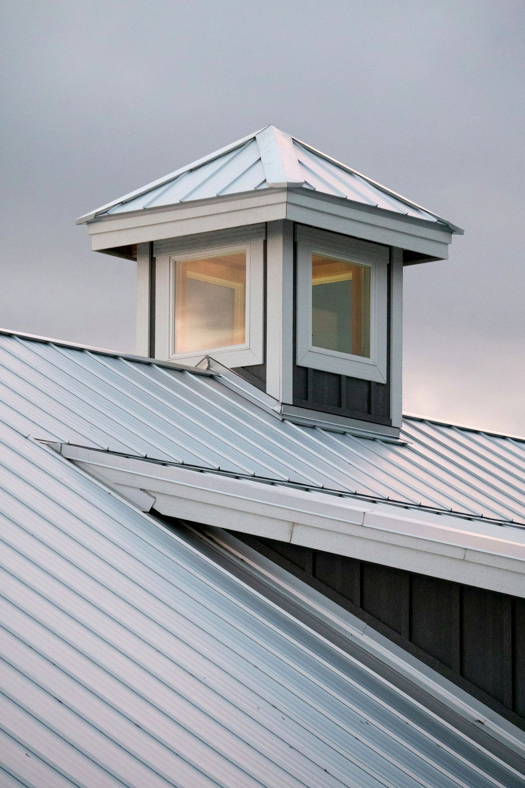

Votre toit, entre de bonnes mains.
Couverture, zinguerie et charpente à Cournon-d'Auvergne depuis 2000.
De Clermont-Ferrand à Saint-Nectaire
Notre zone d'intervention pour la toiture, l'isolation et la charpente.
Quatre gestes, un seul toit.

Couverture
Dépose et pose de tuiles, ardoises ou bac acier, réparation d'une partie de toit ou réfection complète.

Zinguerie
Gouttières, descentes, rives, noues et solins : l'eau doit partir où on l'a décidé.

Charpente
Réparation, renfort ou création de charpente traditionnelle.

Dépannage de toiture
Fuite, tuiles envolées après un coup de vent : on intervient d'abord pour mettre hors d'eau.

Une entreprise familiale, reprise en 2000.
Dôme Toiture est née de la reprise des Établissements Echaubard Jacques par Franck Rabatel. Aujourd'hui, une équipe de 7 artisans travaille sur les toits de Cournon et des environs, de Clermont-Ferrand à Saint-Nectaire.
Comment se passe un chantier.
- 01Une étude personnalisée
Chaque projet commence par une étude, puis un devis gratuit.
- 02Des délais annoncés
Les délais sont donnés avant le début des travaux, et respectés.
- 03Un chantier sécurisé
Des procédures conformes aux normes en vigueur.
- 04Un espace laissé propre
Le chantier est nettoyé après le passage de l'équipe.

Sur les toits, au quotidien.



Couvreurs au travail, photos libres de droits : elles ne montrent pas l'équipe de Dôme Toiture.
Tout ce qui se passe au-dessus de vos têtes.
Huit métiers autour du toit, menés par la même équipe, du diagnostic à la dernière rive.
Couverture
Dépose et pose de tuiles, ardoises ou bac acier, réparation d'une partie de toit ou réfection complète.
Zinguerie
Gouttières, descentes, rives, noues et solins : l'eau doit partir où on l'a décidé.
Fenêtre de toit
Création ou remplacement, avec l'étanchéité reprise autour de l'ouverture.

04Isolation de toiture
Une couche de protection de plus entre les combles et la couverture.
 05
05Charpente
Réparation, renfort ou création de charpente traditionnelle.
Extension et surélévation
Agrandir la maison en gardant la toiture cohérente avec l'existant.
 07
07Terrasse et bardage
Aménagement extérieur en bois, et habillage de façade.
 08
08Dépannage de toiture
Fuite, tuiles envolées après un coup de vent : on intervient d'abord pour mettre hors d'eau.
Questions fréquentes.
Le devis est-il gratuit ?
Oui. Chaque projet commence par une étude personnalisée et un devis gratuit.
Où intervenez-vous ?
Sur une large zone, de Clermont-Ferrand à Saint-Nectaire, depuis Cournon-d'Auvergne.
Que faire en cas de fuite ?
Dôme Toiture propose un dépannage de toiture. Appelez : la première urgence est de mettre le toit hors d'eau.
Faites-vous aussi l'isolation et la charpente ?
Oui, l'isolation de toiture et la charpente font partie des huit métiers de l'entreprise.
Quels sont vos horaires ?
Lundi, mardi et jeudi de 8h à 12h et de 13h à 17h, mercredi de 8h à 12h, vendredi de 8h à 12h et de 13h à 16h.
Un toit à regarder ?
Décrivez le chantier ou appelez directement : une étude personnalisée précède chaque devis.
Demander un devis06 32 41 32 41
Horaires et adresse.
4 rue des Acilloux, 63800 Cournon-d'Auvergne